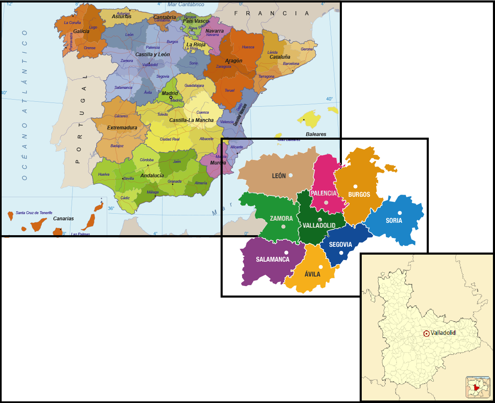

ÁVILA
BURGOS
LEÓN
PALENCIA
SALAMANCA
SEGOVIA
SORIA
ZAMORA

La provincia de Valladolid se encuentra en España, pertenece a la comunidad de Castilla y León.
Citaremos algunas de las ciudades más representativas de cada comarca:
Incluyo un enlace a la página para ver la guia de Cultura y Ocio disponible.
Vídeo de Valladolid
Dejo en el enlace a varias pág. de interés sobre el turismo en Valladolid, donde incluyen restaurantes, hoteles, rutas, etc.
Guía Turismobde Valladolid
Guía Valladolid